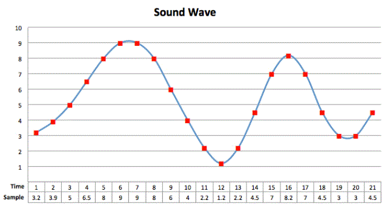

De term bestandsindeling (ook wel bestandstype of bestandsindeling genoemd) verwijst naar de manier waarop informatie in een computerbestand wordt gecodeerd. Dit bepaalt voor een groot deel wat je met het bestand kunt doen. Er zijn twee hoofdtypen bestandsindelingen: tekst en binair. Bestanden met tekstindeling bevatten alleen leesbare tekens en kunnen door veel computerprogramma's worden gelezen. Ze kunnen echter meestal ook worden gelezen en bewerkt met een teksteditor zoals Kladblok of NoteTab, wat niet het geval is met binaire bestanden. Bestanden in tekstformaat kunnen verschillende structurele of inhoudelijke annotaties bevatten, maar deze tags of codes bestaan ook volledig uit letters, cijfers en interpunctie.
Hieronder zal ik u het meestvoorkomende bestandsformaten uitleggen:
-JPEG OF JPG(Joint Photographic Experts Group): Jpg is een afkorting van jpeg. Jpg combineert informatie samen. Dit bestandsformaat wordt vaak gebruikt bij bitmapafbeeldingen.
-Pdf(Portable Document Format): Het bestandsformaat Pdf zorgt ervoor dat leesbaarheid en de opmaak zoals: lettertypes hetzelfde blijft.
-PNG (Portable Network Graphics): een bestandformaat dat voor minder kwaliteitsverlies zorgt.
-GIF (Graphics Interchange Format): wordt meestal gebruikt om voor bewegende plaatjes op internet te zorgen.
-AI (Adobe Illustrator): wordt vaak gebruikt voor het ontwerpen van logo's.
-SVG (Scalable Vector Graphic): een bestandsformaat dat gebruikt wordt bij vectorafbeeldingen.
-PSD (Photoshop Document): bestanden die zijn gemaakt en opgeslagen in Adobe Photoshop.
-RAW (ruw): een bestand dat de originele beeldinformatie bevat.
Wanneer een afbeelding wordt omgezet in een foto, bestaat deze uit vele pixels. Als er veel pixels zijn, is het beeld scherp. De afbeelding van pixels is een bitmapafbeelding.
Een bitmapafbeelding heeft twee kenmerken:
- dat de afbeelding veel opslagruimte in beslag neemt.
- Zodra het beeld wordt ingezoomd, worden individuele pixels steeds beter zichtbaar.
Deze twee functies zorgen ervoor dat niet alle beelden kunnen worden opgeslagen en dat het beeld niet scherp is.Zodra er een afbeelding wordt gemaakt die zeer scherp moet zijn, wordt er gebruik gemaakt van een vectorafbeelding. De Vector afbeelding is de verzamelnaam voor afbeeldingen die naar wens vergroot en verkleind kunnen worden zonder kwaliteitsverlies. Dit komt omdat deze bestanden bestaan uit vectoren in plaats van blokvormige pixels. Vectoren zijn paden die bestaan uit een begin- en eindpunt met daartussen een lijn, golf, cirkel of andere vorm. Een nadeel van een vectorafbeelding is dat er alleen wordt gewerk met vormen, dus als een afbeelding bestaat uit veel kleurtinten kan deze niet als een vectorafbeelding worden opgeslagen. Een voordeel van een vectorafbeelding is dat een afbeeldingen aanpassen erg gemakkelijk gaat.
De afbeelding hieronder toont het verschil tussen een bitmapafbeelding en een vectorafbeelding.
Geluid bestaat namelijk uit trillingen, die zich voortplanten door de lucht. Een computer kan deze trillingen omzetten in binaire waardes.
De registratie (‘opname’) van geluid gebeurt met een microfoon.
Een microfoon zet dan het geluid uit de omgeving om in een elektrisch signaal. Die signalen worden vervolgens door de microfoon doorgestuurd naar een computer
Zodra de signale zijn aangekomen bij een computer, zet de computer deze signalen om in een digitale waarde, die de computer vervolgens omzet naar geluid.
U hoort nu een geluid door uw speakers
Het proces waarbij een computer elektrische signalen omzet in digitale waarden, wordt sampling genoemd. Tijdens het samplen wordt het sterkte van het geluid gemeten over een bepaalde periode. De bepaalde tijdsduur waarmee het samplen gebeurd, heet de sample rate. Veel muziek wordt opgenomen op een sample rate van 44,1kHz.
De sterkte van het geluid als functie van de tijd, kan worden weergeven in een grafiek. Hieronder kunt u het grafiek zien. In de tabel wordt tijd en waardes opgeslagen die vervolgens door het binairestelsel worden opgeslagen.
